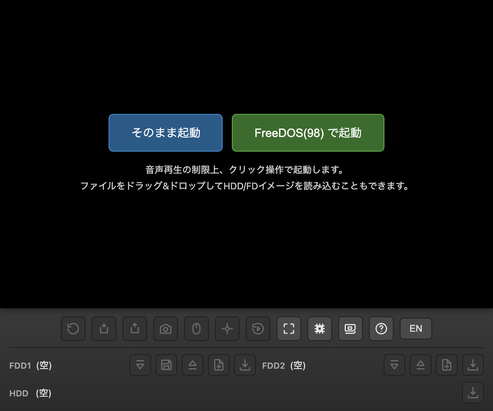
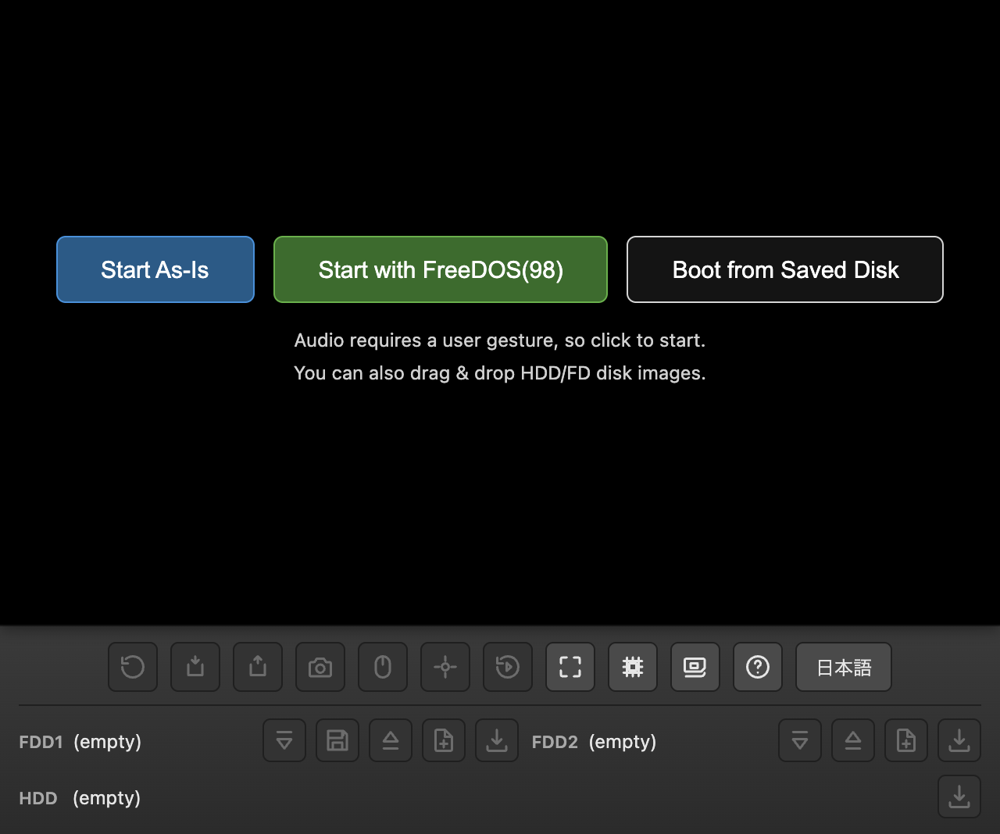
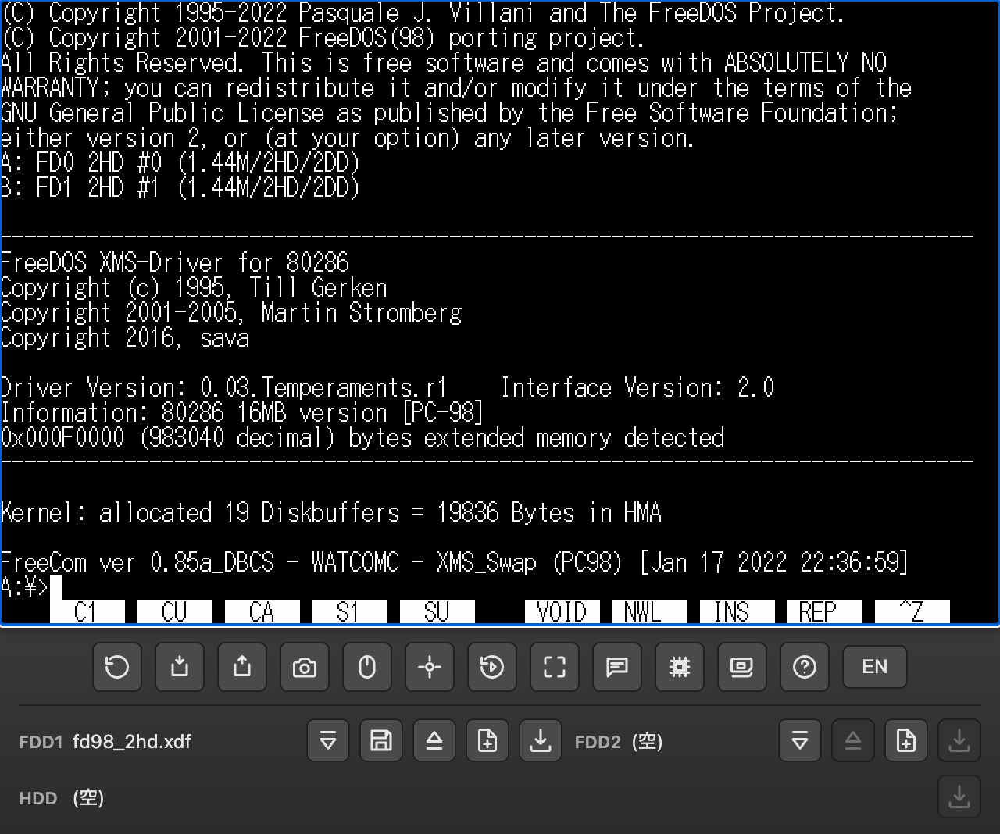
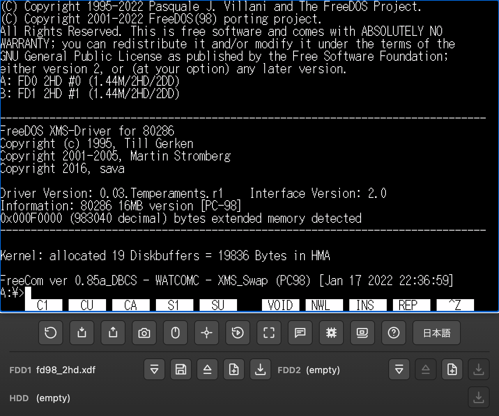
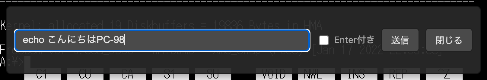
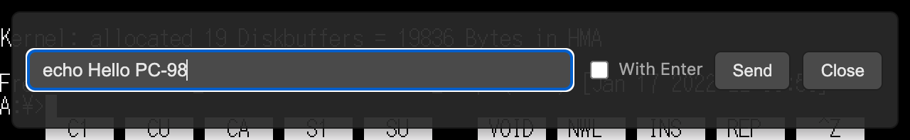
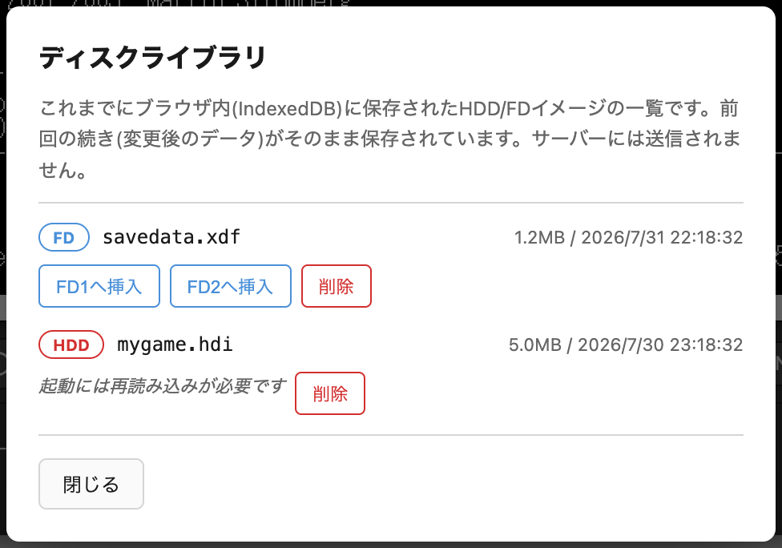
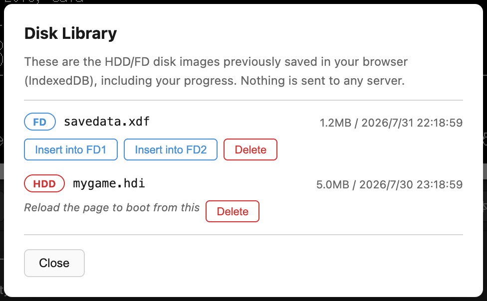

はじめに
WebNP2 は、PC-98 エミュレータ NP2kai の wasm ビルドをブラウザ上で動かす Web プレイヤーです。URL を開くだけで起動でき、 続きから再開できることを目指しています。
ROM・市販ソフトウェアのディスクイメージは一切同梱していません。 手元のHDD/FDイメージを画面へドラッグ&ドロップして読み込ませて使います。
読み込んだディスクイメージは、あなたのブラウザ内(IndexedDB)にのみ保存され、 サーバーへ送信されることはありません。
Introduction
WebNP2 is a web player that runs a WebAssembly build of the PC-98 emulator NP2kai in your browser. The goal is a "just open the URL" experience where you can resume right where you left off.
No ROM images or commercial software disk images are bundled. You load your own HDD/FD images by dragging and dropping them onto the screen.
Any disk image you load is saved only inside your browser (IndexedDB) and is never sent to any server.
起動する
ページを開くと起動オーバーレイが表示されます。URLでディスクイメージを 指定していない場合は「そのまま起動」（イメージ無しで開始し、後から ドラッグ&ドロップで読み込む）と「FreeDOS(98) で起動」（同梱の起動FDで すぐに試す）の2択が、URLでディスクを指定している場合は単一の 「クリックして起動」ボタンが表示されます。ライブラリに保存済みの イメージがあれば「保存済みディスクから起動」も表示されます。

ブラウザの音声再生制限により、音声はクリック操作(または自動起動時は 最初のクリック/キー入力)まではミュートになります。
Starting the emulator
A start overlay appears when you open the page. If no disk image is specified via URL, you get two choices: "Start As-Is" (start with no image loaded, then drag & drop one afterward) or "Start with FreeDOS(98)" (try it immediately with the bundled boot floppy). If a disk is specified via URL, a single "Click to Start" button is shown instead. If saved images exist in the library, a "Boot from Saved Disk" button also appears.

Due to browser autoplay restrictions, audio stays muted until you click (or, for auto-start, until your first click or key press).
ディスクイメージを読み込む
画面領域にファイルをドラッグ&ドロップすると、拡張子からHDD/FDを 自動判別して読み込みます。
- HDD判定:
.thd.hdi.nhd.hdd - FD判定:
.d88.fdi.xdf.dup.fdd.hdm
画面下部にはFDD1/FDD2/HDDそれぞれのスロット行があり、挿入・ FreeDOS(98)挿入(FDD1のみ)・排出・ブランク作成・ダウンロードの 各ボタンで直接操作できます。

URLパラメータ(?hdd=/?fd1=/?fd2=等)で
イメージを直接指定して開くこともできます。詳細は
READMEのURLパラメータの節
を参照してください。
Loading disk images
Dropping a file onto the screen area auto-detects whether it's an HDD or FD image based on its extension.
- HDD:
.thd.hdi.nhd.hdd - FD:
.d88.fdi.xdf.dup.fdd.hdm
There's an FDD1/FDD2/HDD slot row at the bottom of the player, with buttons for Insert, Insert FreeDOS(98) (FDD1 only), Eject, New Blank, and Download for each drive.

You can also open the page with URL parameters
(?hdd=/?fd1=/?fd2=, etc.) to load
images directly. See the
URL parameters section of the README
for details.
ツールバーのボタン一覧
| ボタン | 説明 |
|---|
Toolbar buttons
| Button | Description |
|---|
テキスト送信（日本語入力）
吹き出しアイコンのボタン、または Shiftキーを2回連続 (0.5秒以内、間に他のキーを挟まない)で押すと、送信バーが開きます。

ホスト側（このページ）で入力したテキストを、ゲスト(エミュレータ内)へ キーボード入力として送信します。「Enter付き」にチェックを入れると 末尾に改行を付けて送信します。
全角文字(Shift_JIS)は、FreeDOS(98) など対応しているゲスト環境では そのまま届きます。NEC MS-DOS の標準的なコンソール入力では全角が 化けてしまう場合があります。その際はテキスト送信バー内の 「日本語入力を有効化」ボタンを押してください。同梱のツールFDに 入っている常駐ヘルパー(PASTE.COM)をゲストへ導入することで、 以降は全角も送れるようになります。DOSのコマンド待ち状態 （プロンプト）で実行してください。
Sending text (typing Japanese)
Click the speech-bubble button, or press Shift twice in a row (within 0.5 seconds, no other key in between) to open the send-text bar.

Text you type on the host (this page) is sent to the guest (inside the emulator) as keyboard input. Check "With Enter" to append a newline at the end.
Full-width characters (Shift_JIS) reach the guest directly on environments that support them, such as FreeDOS(98). On a plain NEC MS-DOS console, full-width characters may come out garbled. In that case, click the "Enable full-width input" button inside the text send bar. It installs a resident helper (PASTE.COM) from the bundled tool floppy into the guest, after which full-width text can be sent. Run it while DOS is sitting at a command prompt.
セーブと続きから遊ぶ
ツールバーの「ステート保存」「ステート復元」ボタンで、実行状態を スロットへスナップショット保存・復元できます。
また、ディスクの変更内容はブラウザ内(IndexedDB)へ自動保存され、 次回同じイメージで開いたときに続きから再開します。ディスク ライブラリでは、これまでに保存されたHDD/FDイメージの一覧から 起動・FD挿入・削除ができます。

「初期状態に戻す」ボタンを押すと、保存済みの進行状況を削除し、 配布元のイメージに戻せます（実行前に確認ダイアログが出ます）。
Saving and resuming
Use the "Save State" and "Load State" toolbar buttons to snapshot and restore the running state to/from a slot.
Disk changes are also auto-saved to your browser (IndexedDB), so opening the same image again resumes from where you left off. The Disk Library lets you boot, insert into an FD drive, or delete any previously saved HDD/FD image.

"Reset to Original" discards your saved progress and restores the originally distributed image (a confirmation dialog appears first).
ROM/素材ファイル登録
デスクトップ版NP2kaiで使っていたROM/素材ファイル
(bios.rom, itf.rom, sound.rom,
font.rom, 2608_*.wav 等)をお持ちの場合、
ツールバーの「ROM登録」ダイアログから登録できます。ファイルは
ブラウザ内(IndexedDB)にのみ保存され、次回以降の起動時に自動で
組み込まれます。サーバーには送信されません。反映にはページの
再読み込みが必要です。
Registering ROM/asset files
If you have ROM/asset files used by the desktop version of NP2kai
(bios.rom, itf.rom, sound.rom,
font.rom, 2608_*.wav, etc.), you can
register them via the "ROM Files" toolbar dialog. Files are saved
only in your browser (IndexedDB) and automatically loaded on future
starts. Nothing is sent to any server. Reload the page for changes
to take effect.
AIから操作する（MCP連携）
WebNP2 は、ローカルで動かす MCP サーバー(webnp2-mcp)経由で、
Claude Code などの AI エージェントから操作できます。MCP サーバーは
あなたのマシン上で動き、画面内容やディスクイメージが外部サーバーへ
送信されることはありません。
ブラウザで WebNP2 を ?bridge=1 パラメータ付きで開くと、
ページがローカルの MCP サーバーへ接続します。主なツールは以下の
とおりです。
| ツール名 | 概要 |
|---|---|
screen_text | 現在のテキスト画面(80x25)とカーソル位置を取得します。 |
type_text | ASCII文字列をキーボード入力として送ります。 |
paste_text | 全角(Shift_JIS)対応でテキストを貼り付けます。 |
send_keys | "ENTER"や"CTRL+C"のようなキーコンボを送信します。 |
screenshot | 画面のPNGスクリーンショットを取得します。 |
reset | エミュレータをリセットします。 |
save_state / load_state | 実行状態のスナップショット保存/復元を行います。 |
insert_disk / eject_disk | FD1/FD2へのディスク挿入/排出を行います。 |
セットアップ手順の詳細は mcp/README.md を参照してください。
ws:// 接続をローカルホスト宛てでもブロックします。
Controlling WebNP2 from AI agents (MCP)
WebNP2 can be driven by AI agents such as Claude Code through a
local MCP server (webnp2-mcp). The MCP server always
runs on your own machine, and screen contents or disk images are
never sent to any external server.
Open WebNP2 with the ?bridge=1 parameter to have the
page connect to your local MCP server. Some of the main tools:
| Tool | Description |
|---|---|
screen_text | Gets the current text screen (80x25) and cursor position. |
type_text | Sends an ASCII string as keyboard input. |
paste_text | Pastes text with full-width (Shift_JIS) support. |
send_keys | Sends a key combo such as "ENTER" or "CTRL+C". |
screenshot | Captures a PNG screenshot of the screen. |
reset | Resets the emulator. |
save_state / load_state | Saves/restores a snapshot of the running state. |
insert_disk / eject_disk | Inserts/ejects a disk from FD1/FD2. |
See mcp/README.md for full setup instructions.
ws:// connections
from https pages even to localhost.
トラブルシューティング
- 音が出ない — ブラウザの制限により、最初のクリック（または自動起動時はクリック/キー入力）まで音声はミュートです。
- URL指定イメージの取得に失敗する —
hdd/fd1/fd2のURLはCORS(Access-Control-Allow-Origin)が有効な配信元である必要があります。 - マウスカーソルがズレる — ツールバーの「マウス再同期」ボタンで基準を作り直せます。
- 全角文字が化ける — 「テキスト送信（日本語入力）」の章を参照してください。「日本語入力を有効化」でゲスト側にヘルパーを導入すると解決します。
Troubleshooting
- No sound — Due to browser restrictions, audio stays muted until your first click (or, for auto-start, until your first click/key press).
- Fetching a URL-specified image fails — URLs given via
hdd/fd1/fd2must be served from an origin with CORS (Access-Control-Allow-Origin) enabled. - The mouse cursor drifts — Use the "Resync mouse" toolbar button to re-establish the reference point.
- Full-width characters come out garbled — See the "Sending text (typing Japanese)" section above. Installing the guest helper via "Enable full-width input" fixes this.